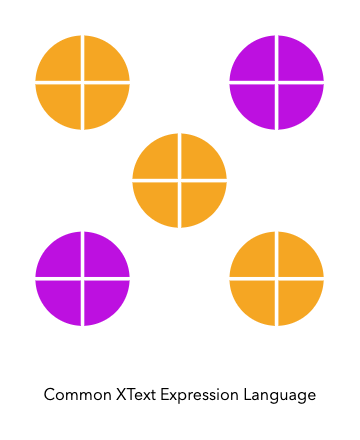

Common-Expression-Language¶

The project provides an expression language built using Xtext and a runtime engine to evaluate the expressions. The expression grammar can be imported in other Xtext DSLs to create composable and reusable languages using Xtext.
Usage¶
- Add the maven dependency
<groupId>com.intuit.dsl.expression</groupId> <artifactId>com.intuit.dsl.expression.runtime</artifactId> <version>${latest}</version> - Code usage
DataValue value = ExpressionRuntime.newExpressionRuntime()
.withExpressionContent(expressionString)
.evaluate();
Setting up the Project¶
Pre-requisites¶
- Java 8
- Maven 3
Making changes to Runtime¶
- Clone common-xtext-expression-language
- Run
maven clean install - Import the runtime module
com.intuit.dsl.expression.runtime. This is standard java project which can be imported in your favorite editor.
Making changes to Expression Grammar¶
- Download and install Eclipse MAC / Windows / Linux.
- Install Xtext SDK in Eclipse:
a. In Eclipse, click Help → Install New Software.
b. In Available Software, click Add to add a repository with the following location http://download.eclipse.org/modeling/tmf/xtext/updates/composite/releases/
c. Select the repository just added in 'Work with' dropdown.
d. Select and install Xtext Complete SDK. - Restart Eclipse.
- Edit the grammar
-
Right click on GenerateExpression.mwe2. Run As → 1 MWE2 Workflow.
OR
mvn clean installinside the project
You should be able to use the grammar changes in your runtime.
Formatting¶
Read the Contribution guide